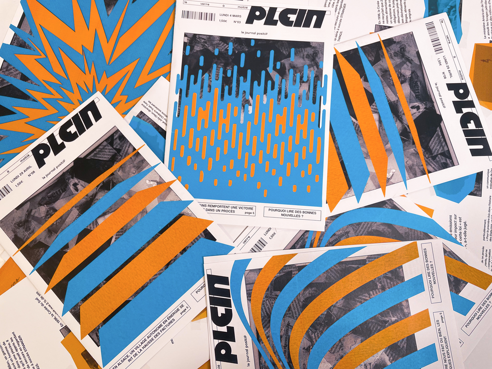
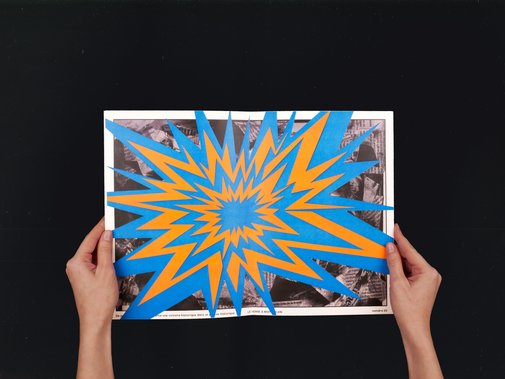
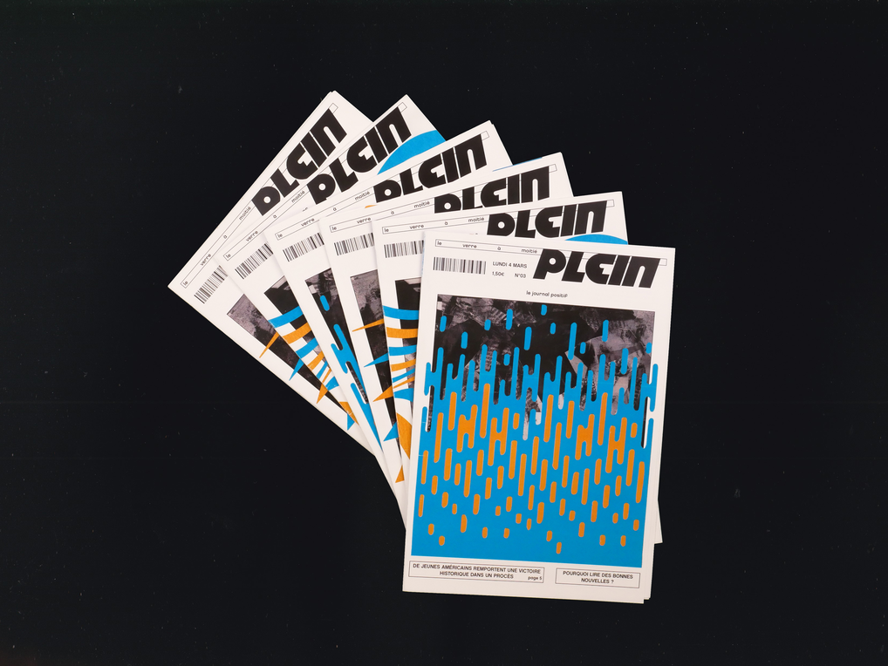
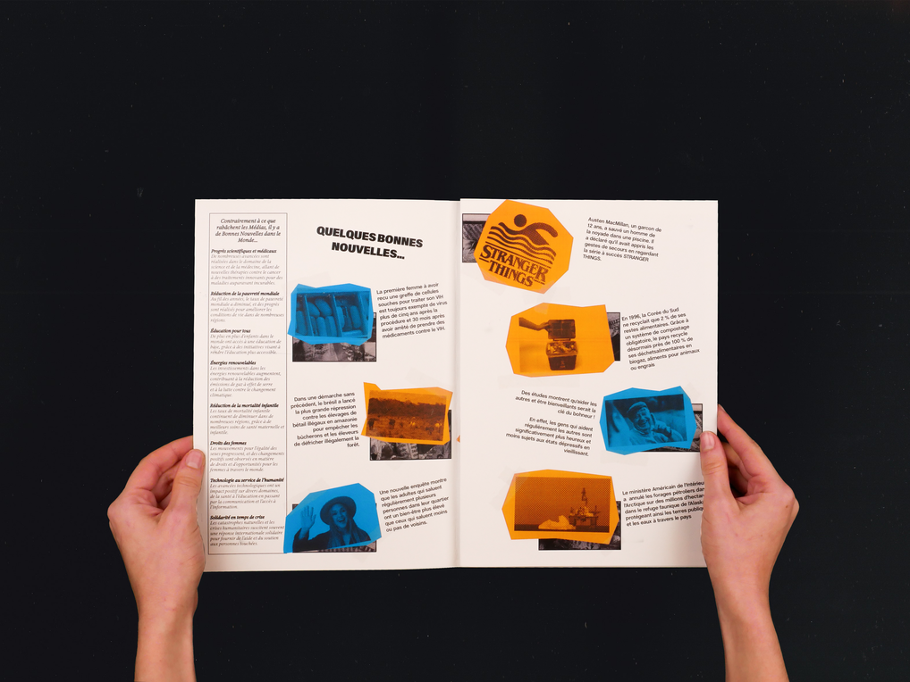

Le verre à moitié plein
← retour
Création d’un journal de nouvelles positives, ayant pour but de donner un nouveau regard sur l’actualité en alternative à toutes les informations négatives qui nous polluent.
«Recouvrir» est le mot d’ordre dans ce journal. J’ai créé une base graphique invariable conçue comme un journal classique pour ensuite le customiser à chaque numéro.
La symbolique du recouvrement ne vise pas à encourager un état de déni. Il suggère que le positif a également sa place et qu’il peut prévaloir sur le négatif, le journal nous incite à aussi voir le verre à moitié plein.
   